Sushi board - Schematics & pinout
Main PCB overview
This is the main PCB where all components and add-on modules (except modem and battery UPS) are connected.
Top PCB overview
The top PCB does not include any circuit tracks; it serves only as a mechanical support for the screen, keyboard, battery, and modem. Using it is OPTIONAL, depending on your requirements.
Connectors
CN_BATT
Power connection
| Pin | Number | Description |
|---|---|---|
| GND | 1 | Power supply GND * Normally connected to UPS Battery or external USB power supply (no battery) |
| VIN | 2 | Main power supply input * Connected to micro ADC input to detect external power supply loss * Range: 0-14V * ESP32 function: I36 |
| VB | 3 | Battery level detection * Connected to micro ADC input to detect battery voltage level * Range: 0-14V * ESP32 function: IO34 |
| 5VIN | 4 | Main board 5V power supply * Normally connected to UPS Battery output or external USB power supply (no battery) * Range: 5V |
Schematic diagram
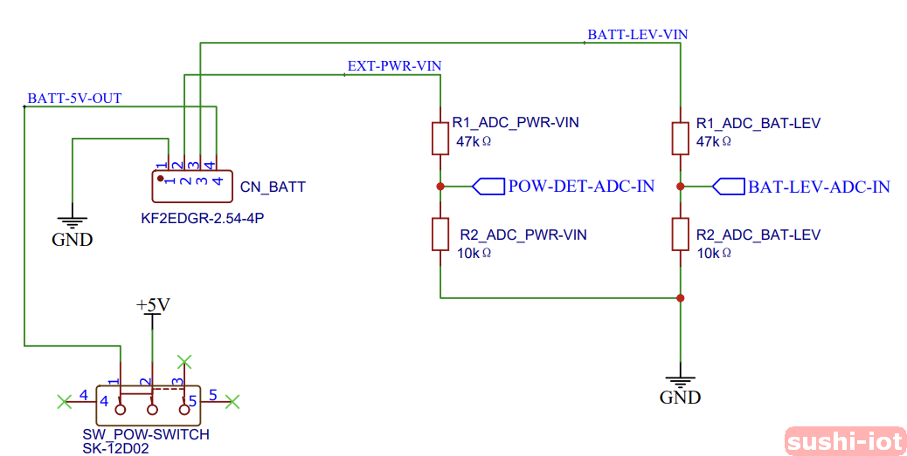
Power modes
There are different ways to power the Sushi board:
- Powered by a direct 5V power supply, without any external UPS or battery. In this case, connect:
CN_BATT pin 1 (GND label) to "-"
CN_BATT pin 4 (5VIN label) to "+"
Typically, the USB-C Socket is used (RED wire is "+", BLACK wire is "-")
-
Powered by the provided UPS unit.
In this configuration, both external power presence and battery level can be monitored. -
Powered via the USB connector of the ESP32 DevKitC board.
This is the typical setup during software development, where the firmware is uploaded directly to the ESP32 board. To avoid damage, disconnect any other power sources from CN_BATT when using this mode. -
Powered by an external custom battery or circuit.
In this case, the VIN and VB pins can still be used in a custom way to monitor external power and battery level. Be careful not to exceed the MAX input range of these pins. You can adapt the ADC voltage divider by changing resistor values to support a different input range. Note that 5VIN must always be a 5V power source coming from the external circuit.
CN_EXT-TS1 (temp. sensor)
Wired external DS18B20 temperature sensor
| Pin | Number | Description |
|---|---|---|
| GND | 1 | Ground wire |
| S | 2 | Signal wire |
| 5V | 3 | Power supply wire |
Schematic diagram
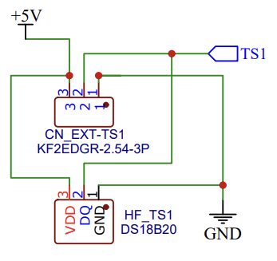
CN_GPIO1 (GPIO)
General-purpose I/O directly connected to the ESP32 microcontroller on the ESP32-DevKitC board.
| Pin | Number | Description |
|---|---|---|
| GND | 1 | Ground for GPIO |
| IO1 | 2 | General-purpose Input/Output * ESP32 function: IO19 |
| IO2 | 3 | General-purpose Input/Output * ESP32 function: IO18 |
| IO3 | 4 | General-purpose Input/Output * ESP32 function: IO5 |
CN_GPIO2 (GPIO)
General-purpose I/O directly connected to the ESP32 microcontroller on the ESP32-DevKitC board.
| Pin | Number | Description |
|---|---|---|
| GND | 1 | Ground for GPIO |
| IO4 | 2 | General-purpose Input/Output * ESP32 function: IO4 |
| IO5 | 3 | General-purpose Input/Output * ESP32 function: IO13 |
| O1 | 4 | General-purpose Output * ESP32 function: IO2 * This pin is used by the ESP32 during boot. For safety, use it as an output only (after boot, managed by firmware). If used as input, ensure no external signal forces it during boot as this may prevent the board from starting properly. |
CN_GPIO3 (GPIO)
General-purpose I/O directly connected to the ESP32 microcontroller on the ESP32-DevKitC board.
| Pin | Number | Description |
|---|---|---|
| GND | 1 | Ground for GPIO |
| IN1 | 2 | General-purpose Input * ESP32 function: I39 * This pin is labeled "VN" on the DevKitC board |
| IN2 | 3 | General-purpose Input * ESP32 function: I35 |
| GND | 4 | Ground for GPIO |
CN_IOE_00-03 (IO-exp)
Inputs connected to the PCF8575 I/O expander.
By default, all inputs on CN_IOE_00-03 are used for the 4-button keyboard.
If keyboard management is disabled, they can be used as general-purpose inputs.
| Pin | Number | Description |
|---|---|---|
| P0-1 | 1 | Connected to Pin 00 on PCF8575 * Default: keyboard |
| P0-2 | 2 | Connected to Pin 01 on PCF8575 * Default: keyboard |
| P0-3 | 3 | Connected to Pin 02 on PCF8575 * Default: keyboard |
| P0-4 | 4 | Connected to Pin 03 on PCF8575 * Default: keyboard |
CN_IOE_04-07 (IO-exp)
General-purpose inputs connected to the PCF8575 I/O expander.
| Pin | Number | Description |
|---|---|---|
| P0-5 | 1 | Connected to Pin 04 on PCF8575 |
| P0-6 | 2 | Connected to Pin 05 on PCF8575 |
| P0-7 | 3 | Connected to Pin 06 on PCF8575 |
| P0-8 | 4 | Connected to Pin 07 on PCF8575 |
CN_IOE_10-13 (IO-exp)
General-purpose inputs connected to the PCF8575 I/O expander.
| Pin | Number | Description |
|---|---|---|
| P1-1 | 1 | Connected to Pin 10 on PCF8575 |
| P1-2 | 2 | Connected to Pin 11 on PCF8575 |
| P1-3 | 3 | Connected to Pin 12 on PCF8575 |
| P1-4 | 4 | Connected to Pin 13 on PCF8575 |
CN_IOE_14-17 (IO-exp)
General-purpose inputs connected to the PCF8575 I/O expander.
| Pin | Number | Description |
|---|---|---|
| P1-5 | 1 | Connected to Pin 14 on PCF8575 |
| P1-6 | 2 | Connected to Pin 15 on PCF8575 |
| P1-7 | 3 | Connected to Pin 16 on PCF8575 |
| P1-8 | 4 | Connected to Pin 17 on PCF8575 |
Schematic diagram
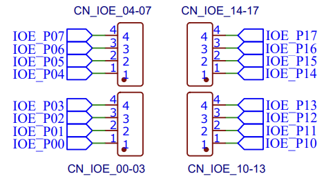
CN_MODEM
Modem connection. This interface can also be used for other devices or modules, depending on your application.
| Pin | Number | Description |
|---|---|---|
| PK | 1 | Modem "power key" pin (if required by the module) * ESP32 function: IO32 * Can also be used as GPIO |
| GND(MOS) | 2 | MOS-controlled GND, used to switch the modem on/off * ESP32 function: IO23 (MOS gate) * Can also control external device power |
| TX | 3 | Modem UART TX (micro RX) * ESP32 function: IO26 * Can also be used as GPIO |
| RX | 4 | Modem UART RX (micro TX) * ESP32 function: IO27 * Can also be used as GPIO |
| 5V | 5 | 5V power supply for modem |
Schematic diagram
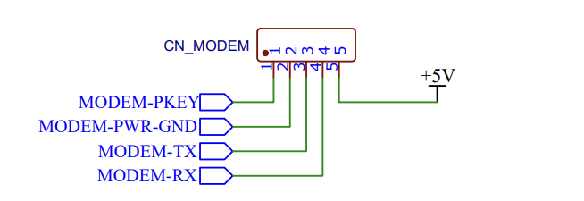
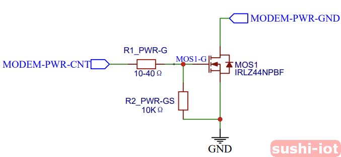
Add-on modules
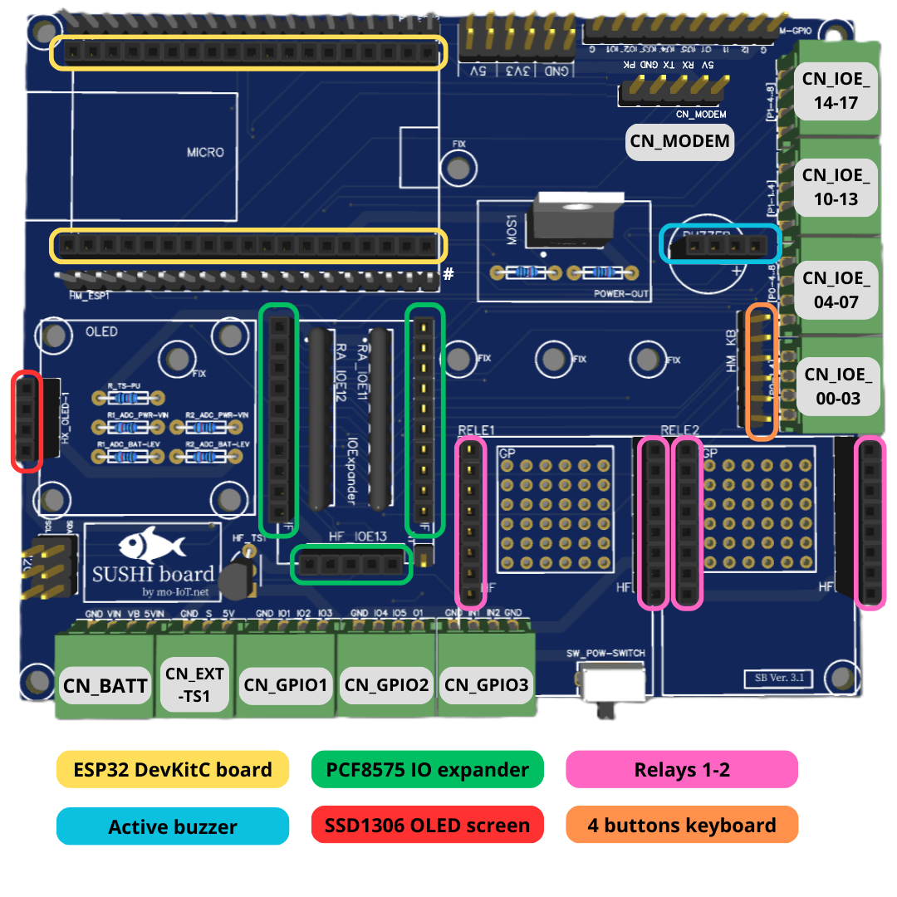
Microcontroller board
Model: ESP32 DevKitC v4, WROVER SoC - 4M Flash - 4M PSRAM - USB TYPE-C - PCB WiFi Antenna.
Description
The ESP32 DevKitC board is the core of the Sushi Board and the only required module.
It is a development board manufactured by Espressif, the ESP32 chip producer. Complete documentation is available here: Espressif ESP32-DevKitC.
Any ESP32 DevKitC v4 board can be used, as they are all pin-compatible.
Note: If using a model with an external antenna connector, even if it has a visible PCB antenna, it may not be internally connected—so in that case, you MUST use the external antenna for proper WiFi operation.
Software control
The ESP32 board can be programmed with several IDEs/languages, such as Espressif IDF (C/C++), Arduino (C/C++), and MicroPython.
The board is preloaded with the Sushi Framework, which handles core tasks and integrates MicroPython for custom development. For more details, see the Sushi Framework documentation.
Schematic diagram
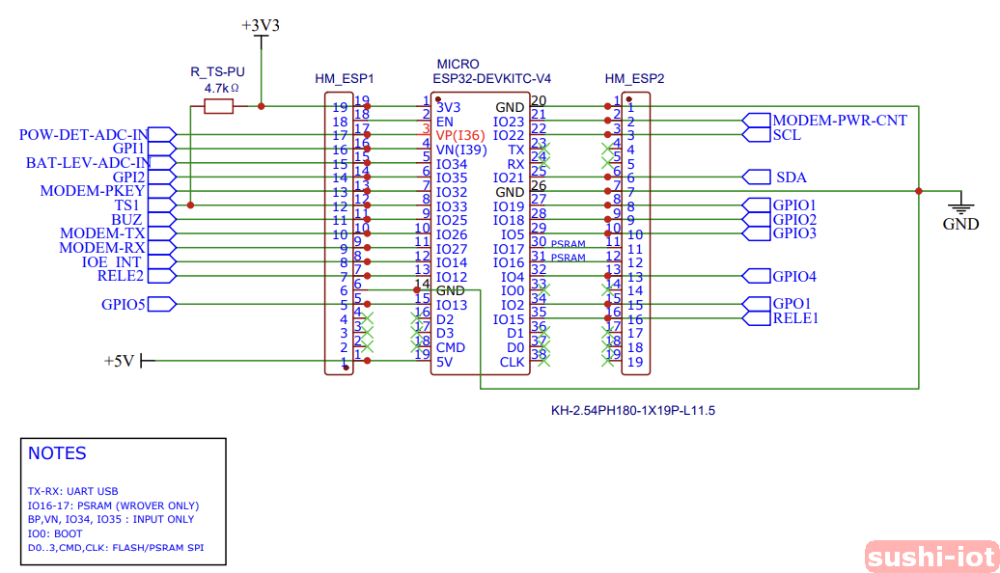
IO-Expander
Model: PCF8575 IO-Expander module
Description This module allows you to add an extra 16 GPIOs to the Sushi Board. It communicates via the I2C interface.
Software control The PCF8575 IO-Expander is connected to the I2C data line on ESP32 pins IO22 and IO21. If using the Sushi Framework, the driver is integrated, and the IO-Expander can be managed by the MicroPython high-level API (see Sushi Framework DOC).
Schematic diagram 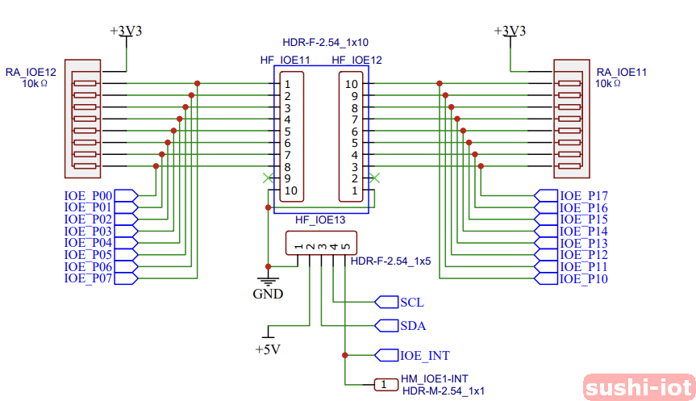
Screen
Model: SSD1306
Description 0.96" 128x64 pixel I2C OLED module. It can be plugged directly onto the main Sushi PCB (bottom) or fixed on the top PCB support with the provided cable.
Software control The SSD1306 OLED is connected to the I2C data line on ESP32 pins IO22 and IO21. If using the Sushi Framework, the driver is integrated, and the SSD1306 OLED can be managed by the MicroPython high-level API (see Sushi Framework DOC).
Schematic diagram 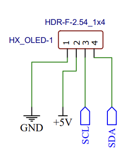
Keyboard
Model: 4-button membrane keyboard
Description It is connected to the Sushi Board via the I2C IO-Expander module.
Software control The keypad is connected to the IO-Expander input on P0..P3. If using the Sushi Framework, keypad management is integrated and used to navigate the user menu. With the MicroPython high-level API, you can integrate your application-specific menu (see Sushi Framework DOC).
Schematic diagram Note that the 4-button keyboard has a 5-pin flat cable:
- one is a common pin
- 4 pins corresponding to each button that connect to the common pin when a button is pressed
The keyboard connector has 6 pins with GND on both pins 1 and 6. This allows you to plug the keyboard on either side, without twisting the flat cable, by plugging the connector aligned to the left or right.
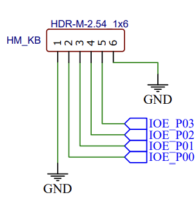
Relays
Model: Wemos D1 mini relays
Description Normally open contact 5A (250VAC/30VDC), 10A (125VAC), MAX: 1250VA/150W. Normally closed contact 3A (250VAC/30VDC), MAX: 750VA/90W. Relay output can be used to enable external devices, even with AC power. Module details: Wemos D1 Mini.
Software control Relays are connected directly to ESP32 pins IO12 and IO15. They can be managed by setting the pin as an output with an ON/OFF signal.
Schematic diagram 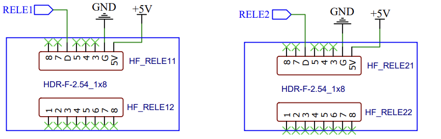
Buzzer
Model: 3V Active Buzzer
Description It can be directly controlled by a MicroPython GPIO pin. It can produce different sounds depending on the frequency and duty cycle of the signal used to control it. It is a general-purpose component and can be freely used depending on the application.
Software control Connected directly to ESP32 pin IO25. It can be managed by setting the pin as an output with a PWM wave to modulate the frequency or simply with an ON/OFF signal.
Schematic diagram 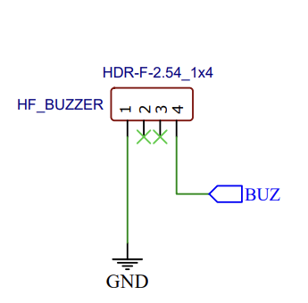
Modem
Model: SIMcom SIM7672X (NA,E,G) modem module.
Description The modem is optional and is the only module fixed to the top support PCB, not on the main bottom PCB. This choice was made because there is no standard solution that can cover all possible needs. The SIMcom SIM7672X is a modem module with worldwide band support (NA=North America, E=Europe, G=Global) and certifications. Any SIM7672X can be compatible: SIM7672X. Even any module with a UART interface can be interfaced with the Sushi Board (but may not be compatible with the Sushi Framework if you're using it).
Software control The modem module is connected and controlled by the microcontroller through the connector CN_MODEM. If using the Sushi Framework, modem management for SIM7672X is integrated. With the MicroPython high-level API, you can perform common operations with the modem (see Sushi Framework DOC).
UPS Battery
Model: LX-2BUPS DC-DC, USB-C, 15W 3A, 5V version
Description UPS unit, holds 2x18650 lithium batteries. Important: For the LX-2BUPS module, the 18650 batteries must be the flat-top version.
Software control The UPS module is connected to the Sushi Board via the CN_BATT connector. One ADC is connected to the main power supply IN to detect main power loss, while the second ADC is used to measure the battery level. ADC readings can be performed directly by managing the ADC pins or, if using the Sushi Framework, with the MicroPython high-level API (see Sushi Framework DOC).
Schematic diagram 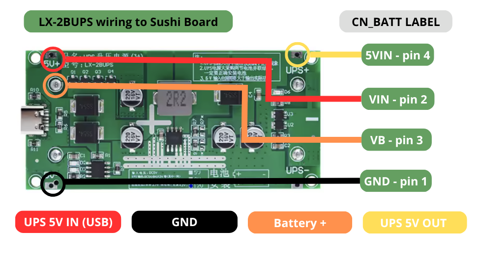
Board components
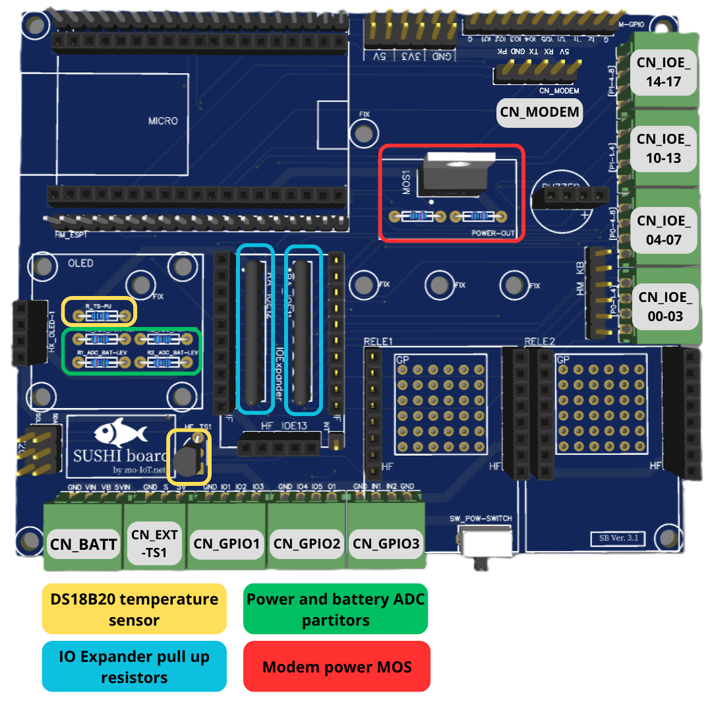
GP Optional Components
On the Sushi Board, there are several general-purpose (GP) elements that are all optional and can be used or not, depending on the specific application. All these elements can be omitted in a first step for basic use of the board. 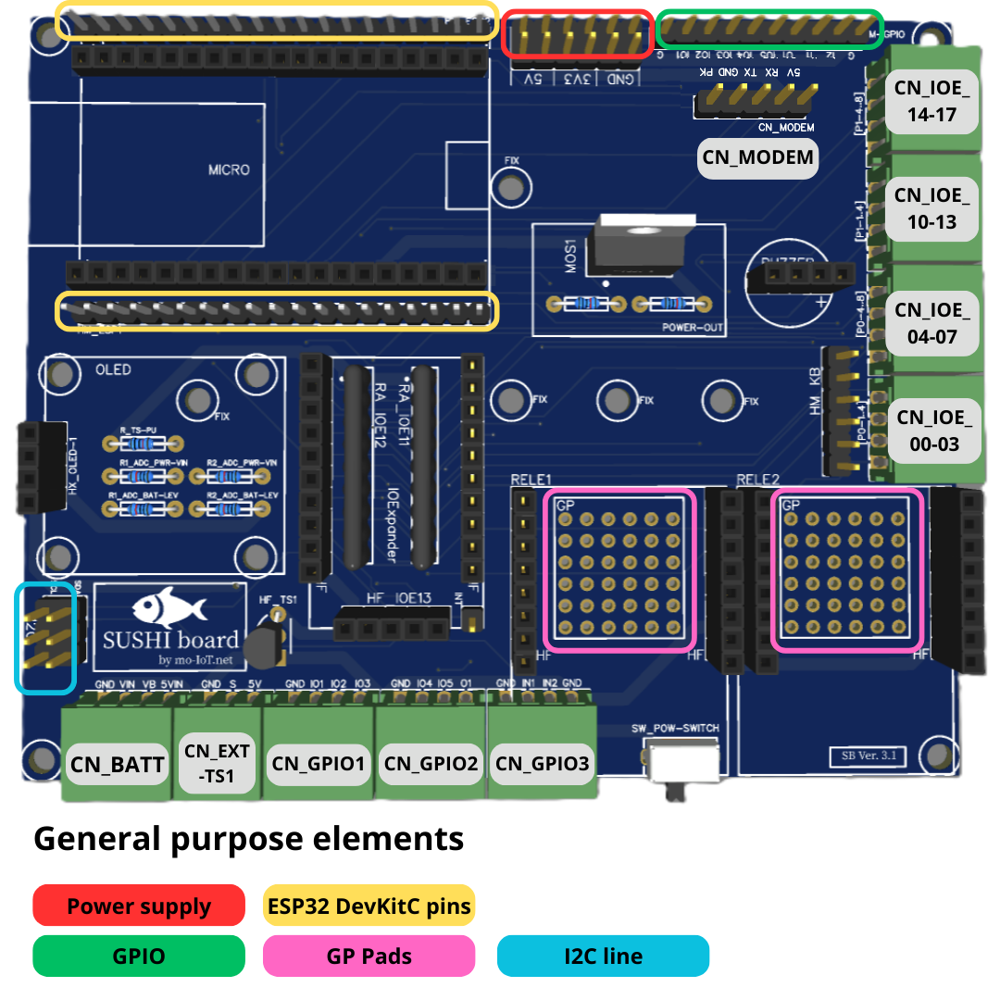